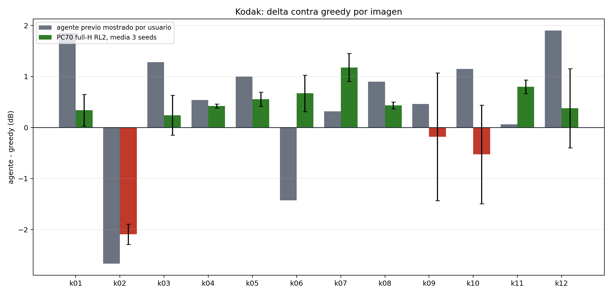
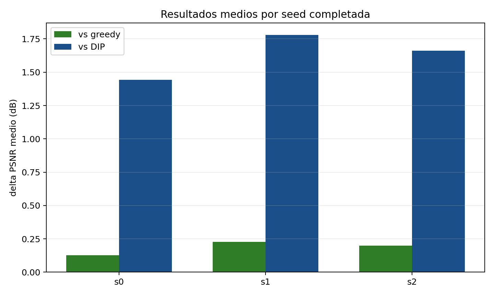
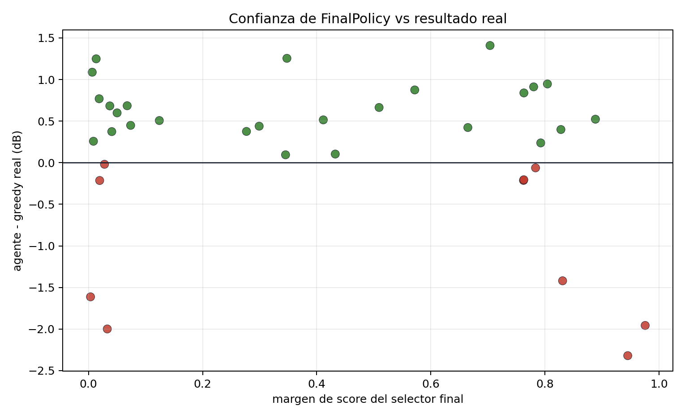
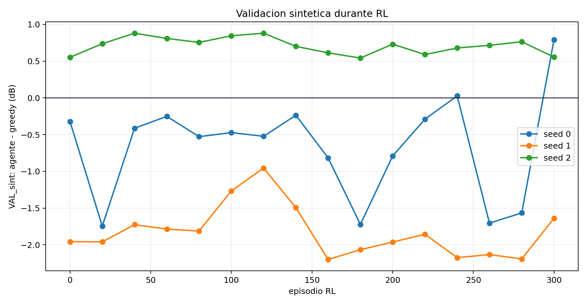
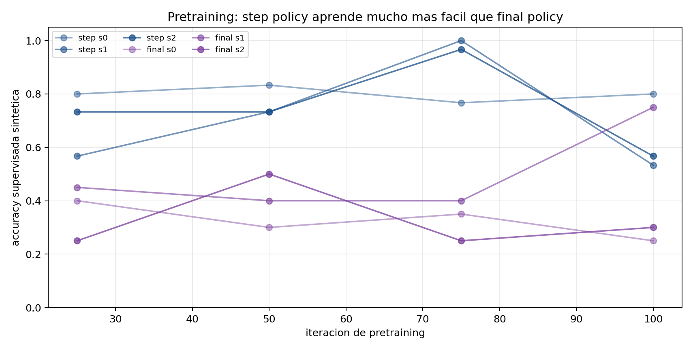
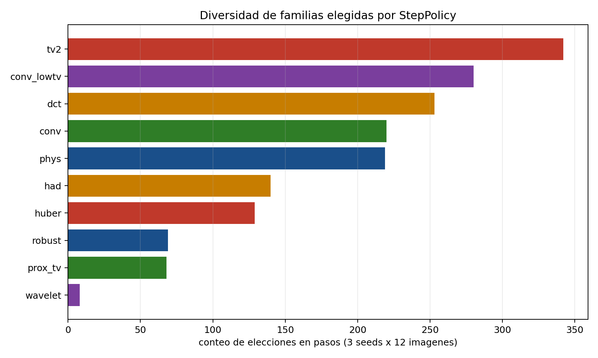
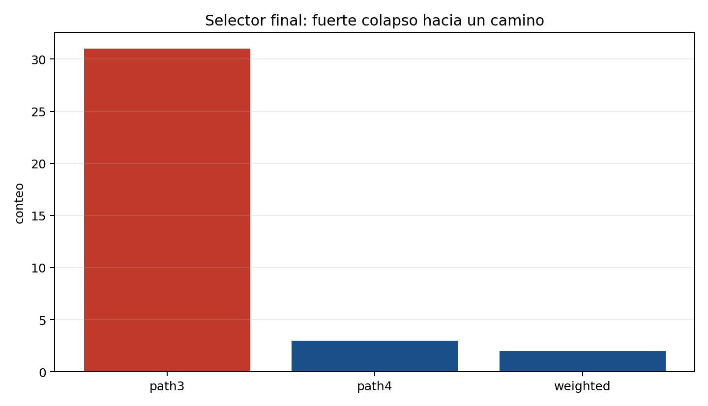
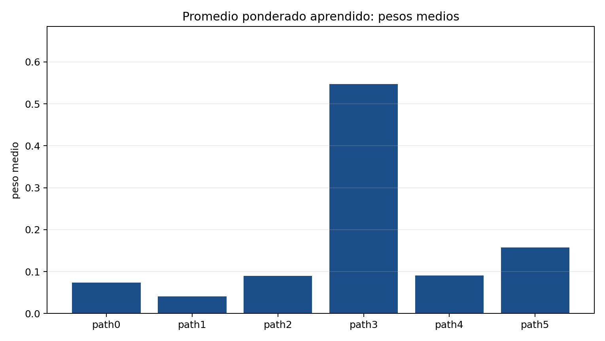
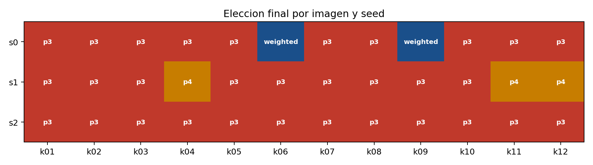

remote_artifacts/.Auditoria sintetica viva/parcial: caminos, familias, weighted y estado de workers
path3 gana 31/36 veces y weighted solo 2/36. Esta es la principal senal de que la mejora arquitectonica no se esta aprovechando.
La barra gris es el resultado previo que mostraste. La barra verde/roja es PC70 full-H RL2 media de 3 seeds, con desviacion entre seeds.


| imagen | PC70-greedy | std | wins/3 | PC70-DIP | prev-greedy | PC70-prev |
|---|---|---|---|---|---|---|
| kodim01 | 0.340 | 0.311 | 2 | 2.126 | 1.850 | -1.510 |
| kodim02 | -2.092 | 0.199 | 0 | 0.826 | -2.670 | 0.578 |
| kodim03 | 0.242 | 0.392 | 2 | 1.922 | 1.280 | -1.038 |
| kodim04 | 0.421 | 0.040 | 3 | 1.458 | 0.540 | -0.119 |
| kodim05 | 0.554 | 0.138 | 3 | 0.939 | 1.000 | -0.446 |
| kodim06 | 0.670 | 0.358 | 3 | 2.499 | -1.430 | 2.100 |
| kodim07 | 1.178 | 0.274 | 3 | 1.668 | 0.320 | 0.858 |
| kodim08 | 0.435 | 0.067 | 3 | 1.230 | 0.900 | -0.465 |
| kodim09 | -0.182 | 1.254 | 1 | 0.911 | 0.460 | -0.642 |
| kodim10 | -0.527 | 0.967 | 1 | 1.713 | 1.150 | -1.677 |
| kodim11 | 0.800 | 0.135 | 3 | 1.991 | 0.060 | 0.740 |
| kodim12 | 0.379 | 0.774 | 2 | 2.252 | 1.900 | -1.521 |


El pretraining de StepPolicy llega a accuracies razonables, pero FinalPolicy queda mucho mas debil. En s1, la validacion sintetica final termina negativa (-1.638 dB), aunque en Kodak s1 fue la mejor seed real. Esto sugiere que la validacion sintetica actual no predice bien el ranking real y que el curriculum sintetico no esta cubriendo el dominio de las imagenes reales.
| seed | episodio | VAL_sint final |
|---|---|---|
| 0 | 300 | 0.791 |
| 1 | 300 | -1.638 |
| 2 | 300 | 0.555 |




La StepPolicy respeta parcialmente la idea de familias: no elige una sola familia globalmente. Pero hay asimetrias fuertes: wavelet casi nunca aparece, robust depende mucho de la seed, y tv2/conv_lowtv/dct dominan. El problema mayor esta al final: FinalPolicy casi siempre convierte todos los caminos en una decision dura a path3. Aunque se agrego weighted, el sistema lo selecciono solo 2/36 veces y sus pesos medios tambien estan concentrados en path3 (0.547).
| familia | cluster | conteo |
|---|---|---|
| tv2 | regularizador | 342 |
| conv_lowtv | frecuencia | 280 |
| dct | transformada | 253 |
| conv | suavidad | 220 |
| phys | datos | 219 |
| had | transformada | 140 |
| huber | regularizador | 129 |
| robust | datos | 69 |
| prox_tv | suavidad | 68 |
| wavelet | frecuencia | 8 |
Los peores casos contra greedy son:
| imagen | PC70-greedy | wins/3 | prev-greedy | ratio |
|---|---|---|---|---|
| kodim02 | -2.092 | 0 | -2.670 | 0.100 |
| kodim10 | -0.527 | 1 | 1.150 | 0.250 |
| kodim09 | -0.182 | 1 | 0.460 | 0.250 |
| kodim03 | 0.242 | 2 | 1.280 | 0.100 |
Los mejores casos contra greedy son:
| imagen | PC70-greedy | wins/3 | PC70-DIP | ratio |
|---|---|---|---|---|
| kodim07 | 1.178 | 3 | 1.668 | 0.250 |
| kodim11 | 0.800 | 3 | 1.991 | 0.250 |
| kodim06 | 0.670 | 3 | 2.499 | 0.100 |
| kodim05 | 0.554 | 3 | 0.939 | 0.250 |
path3. Eso es distinto de elegir inteligentemente entre salidas, mean y weighted.wavelet e inr casi no participan. Si esas familias deben existir por arquitectura, conviene anadir regularizacion de diversidad o entrenamiento por cluster para evitar colapso.train_decisions_s*.jsonl con una fila por decision, no solo resumen de consola.Estos logs estaban incompletos al momento de copiarlos: no hay checkpoints ni tests de esas seeds, por eso no entran en el resultado principal.
| seed | fase | avance | VAL delta |
|---|---|---|---|
| 10 | pre_step | 75/100 | |
| 11 | pre_step | 75/100 | |
| 12 | pre_step | 75/100 | |
| 13 | pre_step | 75/100 | |
| 14 | pre_step | 75/100 | |
| 15 | pre_step | 75/100 | |
| 16 | pre_step | 75/100 | |
| 17 | pre_step | 75/100 | |
| 18 | pre_step | 75/100 | |
| 19 | pre_step | 75/100 | |
| 20 | pre_step | 75/100 | |
| 21 | pre_step | 75/100 | |
| 22 | pre_step | 75/100 | |
| 3 | pre_step | 100/100 | |
| 4 | pre_step | 100/100 | |
| 5 | pre_step | 100/100 | |
| 6 | pre_step | 75/100 | |
| 7 | pre_step | 75/100 | |
| 8 | pre_step | 75/100 | |
| 9 | pre_step | 75/100 |
CSVs generados: test_results_long.csv, test_results_by_image.csv, seed_summary.csv, training_curves.csv, step_decisions.csv, final_decisions.csv, family_counts.csv, final_choice_counts.csv.